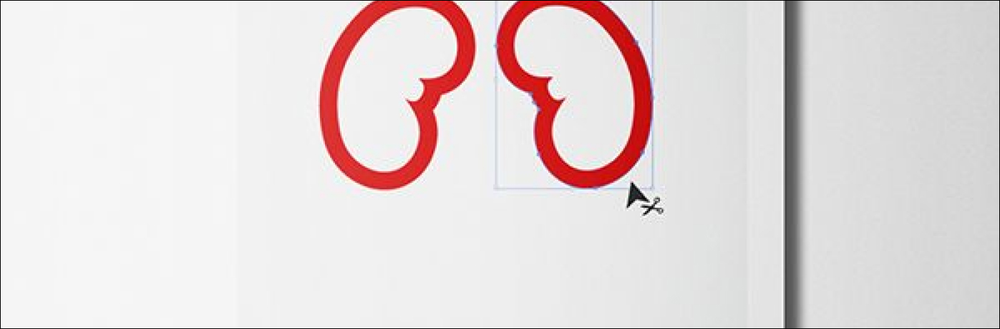

SOCIAL DONORS
Social Donor is a non-profit organization; therefore, ownership of its assets does not belong to its members.
In the event that SANBS ceases to exist, its assets must be transferred to an organization with similar purposes and objectives.
Social Donor provides an essential service in South Africa and is ranked among the best in the world for blood and blood products
delivery, as well as research and training provided.
Social Donor operates throughout South Africa, with the exception of the Western Cape.
Social Donor is also considered a key player in providing assistance to countries in the SADC region.

About Blood

Benefits

Donating Blood
Unlike madication,blood cannot be manufactured.Healthy donors are the only source of blood for those who need it. If it was not for blood donors,life saving medical treatement for people with life threating diseases would not be possible.
Blood is essential for life. Blood circulates in our body and delivers essential substances such as oxygen and nutrients to the cells of the body. It also carries metabolic waste away from the cells themselves. There is no substitute for blood. Generous blood donors are the sole source of blood for patients in need of blood transfusions.
Free health checkup:
In order to give blood, you’re required to undergo a health screening.
A trained staff member performs this checkup. They’ll check your:
This free mini-physical can offer excellent insight into your health.
It can effectively detect problems that could indicate an underlying medical condition or risk factors for certain diseases.
Your blood is also tested for several diseases.
You don't need a special reason to give blood. You just need your own reason.
Some of us give blood because:
What to Expect at Your Donation:
Registration:
You will sign in, show an ID, and be asked to read some required information.
Health History and Mini-Physical :
Answer some questions online or in a private interview,
and receive a general health check.
The results of your mini-physical will be available in your online blood donor account or on the Blood Donor App.
The Donation:
You'll be seated comfortably while a pint of blood is drawn.
The actual donation only takes 8-10 minutes.
Refreshment and Recovery :
After donating,
you can enjoy a snack and a drink for 10-15 minutes before resuming your day.
The entire donation process takes about an hour.
Testing :
Your blood is tested and sent to a patient in need.

At present, only one in every approximate 140 people are blood donors.This means the nation is almost always
close to running out of blood stocks, placing thousands of lives at risk every single day.
Moreover with Social Donors aims to collect an average of 3000 units of blood every day nationally.
It is through planned,
sustainable blood drives at companies, organisations and institutions that we are able to achieve this collection target
Blood drives are used by many companies as a Corporate Social Investment activity to show that they are actively involved in
impacting on the lives of South Africans.
South African National Social Donors
22 Waaihoek Str, Roodepoort,2092
Tell:011 761 900
Email:Customerservices@SocialDoner.org.za
Tell:0700 11 9042
Mon-Fri: 07:00-17:00
Sat-Sun:08:00-13:00